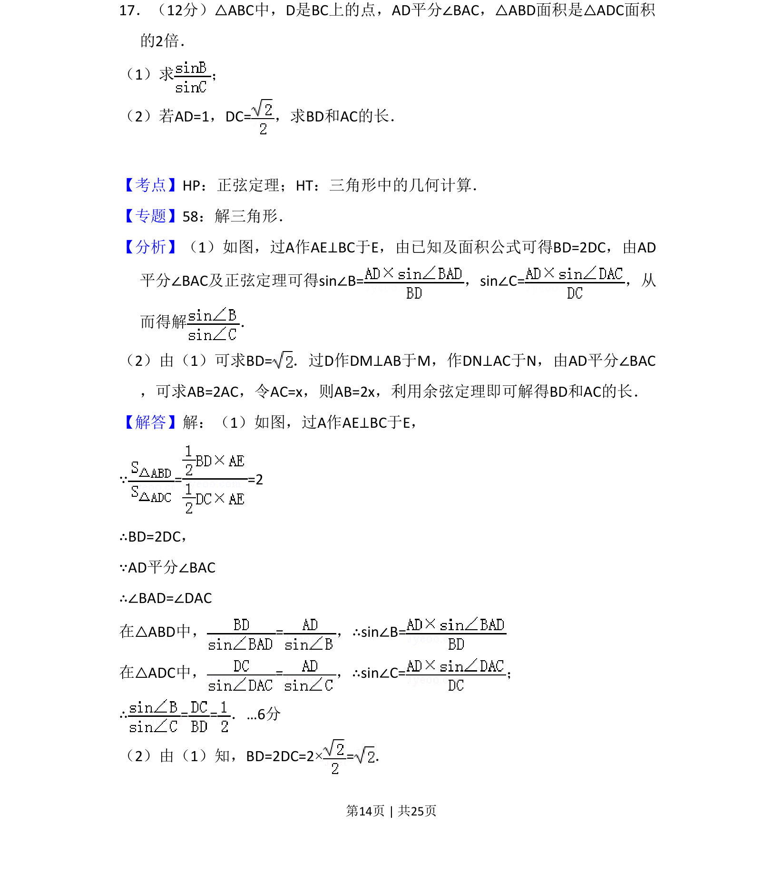
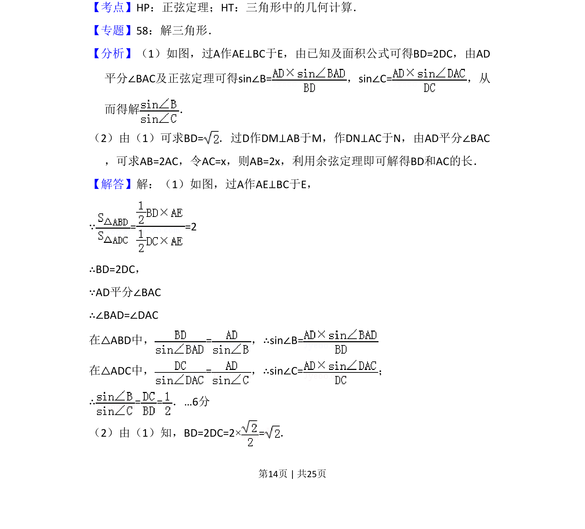
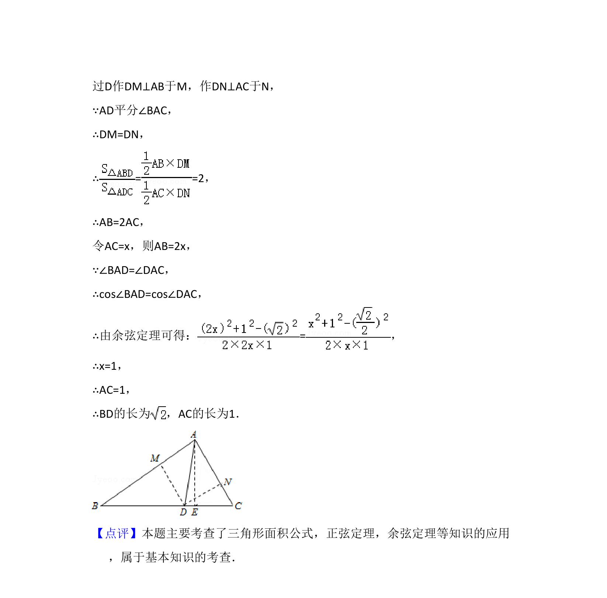

考点：正弦定理 三角形面积 余弦定理 角平分线性质

三角形中角平分线与面积关系问题，通过正弦定理求边长比，用余弦定理求线段长。


📄 原 PDF 第 14 页：
素材/真题/吉林/2008-2024·（吉林）数学高考真题/2015年高考数学试卷（理）（新课标Ⅱ）（解析卷）.pdf
17．（12分）△ABC中，D是BC上的点，AD平分∠BAC，△ABD面积是△ADC面积 的2倍． （1）求 ； （2）若AD=1，DC=，求BD和AC的长．
【考点】HP：正弦定理；HT：三角形中的几何计算．菁优网版权所有 【专题】58：解三角形． 【分析】（1）如图，过A作AE⊥BC于E，由已知及面积公式可得BD=2DC，由AD 平分∠BAC及正弦定理可得sin∠B=，sin∠C=，从 而得解 ． （2）由（1）可求BD=．过D作DM⊥AB于M，作DN⊥AC于N，由AD平分∠BAC ，可求AB=2AC，令AC=x，则AB=2x，利用余弦定理即可解得BD和AC的长． 【解答】解：（1）如图，过A作AE⊥BC于E， ∵= =2 ∴BD=2DC， ∵AD平分∠BAC ∴∠BAD=∠DAC 在△ABD中，=，∴sin∠B= 在△ADC中，=，∴sin∠C=； ∴= =．…6分 （2）由（1）知，BD=2DC=2×=．